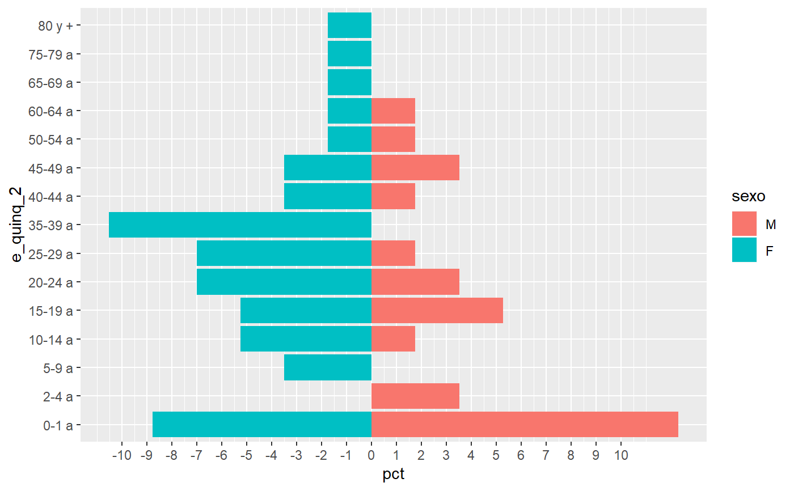

cdc_egresos.RdGeneración de bases resumen para la creación de gráficos de tendencia y tablas reporte con información nominal (por sujeto).
cdc_egresos_summary(data, ..., percent_by = c(1), save = FALSE, rute = "data/") cdc_egresos_by_year(data_long, rute = NA) cdc_piramide(data, x = pct, y = e_quinq_2, z = sexo)
| data | data frame con información nominal (por sujeto) |
|---|---|
| ... | lista de una o más variables |
| percent_by | (numeric vector) seleccionar las variables para generar porcentajes |
| save | (logic) opción para grabar o no la base resumen generada |
| rute | (character string) ruta del objeto a exportar. Las bases se exportan en RDS y DTA. Las tablas en CSV y XLSX. |
| data_long | output from cdc_egresos_summary |
| x | variable en eje x de la pirámide |
| y | variable en eje y de la pirámide |
| z | variable en eje z de la pirámide |
Base con conteo y porcentajes por cruce de variables
cdc_egresos_summary:
cdc_egresos_by_year: create denominator
cdc_piramide: create denominator
#> #>#> #> #>library(haven)#> Warning: package 'haven' was built under R version 3.6.3#> Warning: package 'labelled' was built under R version 3.6.3library(gridExtra)#> #>#> #> #>library(compareGroups)#>#>#>#>#>#> #> #>#> #>#> #> #>library(janitor)#> Warning: package 'janitor' was built under R version 3.6.3#> #>#> #> #>library(magrittr)#> #>#> #> #>#> #> #>#> #> #>#> Observations: 740 #> Variables: 36 #> $ ano <dbl> 2002, 2002, 2002, 2002, 2002, 2002, 2002, 2002, 2002... #> $ sexo <fct> F, F, F, F, F, F, F, M, F, F, F, F, F, M, M, F, F, F... #> $ ubi_rh <chr> "160108", "150142", "140101", "150117", "150509", "0... #> $ t_estanc <dbl> 1, 6, 8, 4, 5, 1, 1, 4, 4, 2, 7, 7, 1, 4, 5, 8, 2, 2... #> $ servicio <fct> Pediatria general, Medicina General, Pediatria gener... #> $ condicion <fct> Fallecido, Alta, Alta, Alta, Alta, Alta, Alta, Alta,... #> $ cie_n <chr> "P239", "Q059", "P599", "K850", "D390", "P034", "N39... #> $ mes_egre <fct> Mar., Sep., Nov., Sep., Feb., Sep., Oct., May., Nov.... #> $ edad_a <dbl> 0.002737851, 39.000000000, 0.021902806, 34.000000000... #> $ eda_esco <fct> No, No, No, No, No, No, No, No, No, No, No, No, No, ... #> $ e_quinq_2 <fct> 0-1 a, 35-39 a, 0-1 a, 30-34 a, 35-39 a, 0-1 a, 15-1... #> $ edad_mef <fct> No, Si (15 - 49 a), No, Si (15 - 49 a), Si (15 - 49 ... #> $ ed_asis <chr> "Neonato (0-27)", "Adulto (20-59 a)", "Neonato (0-27... #> $ ed_asisv2 <chr> "Neonato (0-28)", "Adulto (20-59 a)", "Neonato (0-28... #> $ e_quinq <fct> < 1 a, 35-39 a, < 1 a, 30-34 a, 35-39 a, < 1 a, 15-1... #> $ nombdep <chr> "LORETO", "LIMA", "LAMBAYEQUE", "LIMA", "LIMA", "ANC... #> $ nombprov <chr> "MAYNAS", "LIMA", "CHICLAYO", "LIMA", "CAÑETE", "SAN... #> $ nombdist <chr> "PUNCHANA", "VILLA EL SALVADOR", "CHICLAYO", "LOS OL... #> $ lista_110 <chr> "1209", "1205", "1206", "607", "211", "1209", "702",... #> $ desc_110 <chr> "Otras afecciones originadas en el periodo perinatal... #> $ codlist_12_110 <chr> "1200", "1200", "1200", "600", "200", "1200", "700",... #> $ desc_12 <chr> "Resto de enfermedades", "Resto de enfermedades", "R... #> $ edad_asis2015 <chr> "0-11", "30-59", "0-11", "30-59", "30-59", "0-11", "... #> $ edad_estandar <fct> 0-4 a, 35-39 a, 0-4 a, 30-34 a, 35-39 a, 0-4 a, 15-1... #> $ t_estancia_cat <fct> 1, 6>, 6>, 4, 5, 1, 1, 4, 4, 2, 6>, 6>, 1, 4, 5, 6>,... #> $ t_estanc_anos <dbl> 0.002777778, 0.016666667, 0.022222222, 0.011111111, ... #> $ t_estanc_hora <dbl> 24, 144, 192, 96, 120, 24, 24, 96, 96, 48, 168, 168,... #> $ test_t <lgl> FALSE, TRUE, FALSE, TRUE, TRUE, FALSE, TRUE, FALSE, ... #> $ l <chr> "P", "Q", "P", "K", "D", "P", "N", "P", "O", "T", "P... #> $ cod <dbl> 23, 5, 59, 85, 39, 3, 39, 22, 6, 65, 0, 21, 44, 34, ... #> $ sub <dbl> 9, 9, 9, 0, 0, 4, 0, 1, 4, 9, 3, 1, 1, 2, 2, 9, 1, 0... #> $ year <chr> "2002", "2002", "2002", "2002", "2002", "2002", "200... #> $ ubi_hr <chr> "LORETO-MAYNAS-PUNCHANA", "LIMA-LIMA-VILLA EL SALVAD... #> $ desc_12e <chr> "Resto de enfermedades", "Resto de enfermedades", "R... #> $ servicio_cat <fct> PediatrÃa, Medicina, PediatrÃa, Medicina, Ginecobs... #> $ region_nat <fct> Selva, Costa, Costa, Costa, Costa, Costa, Costa, Cos...#in one line cdc_egresos_summary(data = egress,year,nombdep)#> # A tibble: 247 x 4 #> year nombdep n pct #> <chr> <chr> <int> <dbl> #> 1 2002 ANCASH 5 13.2 #> 2 2002 AYACUCHO 1 2.63 #> 3 2002 CAJAMARCA 1 2.63 #> 4 2002 CUSCO 1 2.63 #> 5 2002 HUANCAVELICA 2 5.26 #> 6 2002 HUANUCO 1 2.63 #> 7 2002 ICA 3 7.89 #> 8 2002 JUNIN 2 5.26 #> 9 2002 LA LIBERTAD 1 2.63 #> 10 2002 LAMBAYEQUE 2 5.26 #> # ... with 237 more rows#> # A tibble: 357 x 5 #> year nombdep sexo n pct #> <chr> <chr> <fct> <int> <dbl> #> 1 2002 ANCASH M 3 60 #> 2 2002 ANCASH F 2 40 #> 3 2002 AYACUCHO M 1 100 #> 4 2002 CAJAMARCA M 1 100 #> 5 2002 CUSCO F 1 100 #> 6 2002 HUANCAVELICA F 2 100 #> 7 2002 HUANUCO M 1 100 #> 8 2002 ICA M 1 33.3 #> 9 2002 ICA F 2 66.7 #> 10 2002 JUNIN M 1 50 #> # ... with 347 more rows#cdc_egresos_summary(data = egress,percent_by = c(2,3),year,nombdep,sexo) cdc_egresos_summary(data = egress,year,nombdep,edad_asis2015,sexo)#> # A tibble: 548 x 6 #> year nombdep edad_asis2015 sexo n pct #> <chr> <chr> <chr> <fct> <int> <dbl> #> 1 2002 ANCASH 0-11 M 1 2.63 #> 2 2002 ANCASH 0-11 F 1 2.63 #> 3 2002 ANCASH 18-29 M 1 2.63 #> 4 2002 ANCASH 18-29 F 1 2.63 #> 5 2002 ANCASH 30-59 M 1 2.63 #> 6 2002 AYACUCHO 60> M 1 2.63 #> 7 2002 CAJAMARCA 0-11 M 1 2.63 #> 8 2002 CUSCO 30-59 F 1 2.63 #> 9 2002 HUANCAVELICA 0-11 F 1 2.63 #> 10 2002 HUANCAVELICA 30-59 F 1 2.63 #> # ... with 538 more rows#> # A tibble: 548 x 6 #> year nombdep edad_asis2015 sexo n pct #> <chr> <chr> <chr> <fct> <int> <dbl> #> 1 2002 ANCASH 0-11 M 1 50 #> 2 2002 ANCASH 0-11 F 1 50 #> 3 2002 ANCASH 18-29 M 1 50 #> 4 2002 ANCASH 18-29 F 1 50 #> 5 2002 ANCASH 30-59 M 1 100 #> 6 2002 AYACUCHO 60> M 1 100 #> 7 2002 CAJAMARCA 0-11 M 1 100 #> 8 2002 CUSCO 30-59 F 1 100 #> 9 2002 HUANCAVELICA 0-11 F 1 100 #> 10 2002 HUANCAVELICA 30-59 F 1 100 #> # ... with 538 more rowscdc_egresos_summary(data = egress,year,desc_12)#> # A tibble: 140 x 4 #> year desc_12 n pct #> <chr> <chr> <int> <dbl> #> 1 2002 Complicaciones del embarazo, parto y puerperio 5 13.2 #> 2 2002 Enfermedades cardiovasculares y respiratorias 2 5.26 #> 3 2002 Enfermedades de la piel y del sistema osteomuscular y del ~ 1 2.63 #> 4 2002 Enfermedades digestivas 2 5.26 #> 5 2002 Enfermedades endocrinas, metabólicas y nutricionales 1 2.63 #> 6 2002 Enfermedades genitourinarias 4 10.5 #> 7 2002 Enfermedades infecciosas y parasitarias 4 10.5 #> 8 2002 Enfermedades neoplásicas 3 7.89 #> 9 2002 Enfermedades neuropsiquiátricas y de los órganos de los se~ 1 2.63 #> 10 2002 Resto de enfermedades 7 18.4 #> # ... with 130 more rows#> # A tibble: 551 x 5 #> year nombdep desc_12 n pct #> <chr> <chr> <chr> <int> <dbl> #> 1 2002 ANCASH Complicaciones del embarazo, parto y puerperio 1 20 #> 2 2002 ANCASH Enfermedades genitourinarias 1 20 #> 3 2002 ANCASH Resto de enfermedades 2 40 #> 4 2002 ANCASH Traumatismos y envenenamientos 1 20 #> 5 2002 AYACUCHO Enfermedades digestivas 1 100 #> 6 2002 CAJAMARCA Traumatismos y envenenamientos 1 100 #> 7 2002 CUSCO Enfermedades genitourinarias 1 100 #> 8 2002 HUANCAVELICA Enfermedades cardiovasculares y respiratorias 1 50 #> 9 2002 HUANCAVELICA Enfermedades endocrinas, metabólicas y nutric~ 1 50 #> 10 2002 HUANUCO Traumatismos y envenenamientos 1 100 #> # ... with 541 more rows#with tidyverse egress %>% filter(year==max(year)) %>% cdc_egresos_summary(year,desc_12) %>% arrange(desc(pct))#> # A tibble: 9 x 4 #> year desc_12 n pct #> <chr> <chr> <int> <dbl> #> 1 2015 Enfermedades digestivas 13 22.8 #> 2 2015 Resto de enfermedades 10 17.5 #> 3 2015 Traumatismos y envenenamientos 10 17.5 #> 4 2015 Complicaciones del embarazo, parto y puerperio 8 14.0 #> 5 2015 Enfermedades infecciosas y parasitarias 7 12.3 #> 6 2015 Enfermedades cardiovasculares y respiratorias 3 5.26 #> 7 2015 Enfermedades de la piel y del sistema osteomuscular y del t~ 2 3.51 #> 8 2015 Enfermedades genitourinarias 2 3.51 #> 9 2015 Enfermedades neoplásicas 2 3.51#output egress %>% cdc_egresos_summary(year,nombdep,save = T) #dataset#> Error in write_dta_(data, normalizePath(path, mustWork = FALSE), version = stata_file_format(version), label = label): Failed to open 'C:\Users\avallecam\OneDrive\cdc_grupo_investigacion\r_packages_local\cdcper\docs\reference\data\egresos-year_nombdep-long.dta' for writingegress %>% cdc_egresos_summary(percent_by = c(1,2), year,nombdep,edad_asis2015) %>% cdc_egresos_by_year() #wide table#> # A tibble: 112 x 30 #> nombdep edad_asis2015 `2002_n` `2002_pct` `2003_n` `2003_pct` `2004_n` #> <chr> <chr> <dbl> <dbl> <dbl> <dbl> <dbl> #> 1 AMAZON~ 0-11 NA NA NA NA NA #> 2 AMAZON~ 18-29 NA NA NA NA NA #> 3 AMAZON~ 30-59 NA NA NA NA NA #> 4 AMAZON~ 60> NA NA NA NA 1 #> 5 ANCASH 0-11 2 40 NA NA NA #> 6 ANCASH 12-17 NA NA NA NA NA #> 7 ANCASH 18-29 2 40 1 100 NA #> 8 ANCASH 30-59 1 20 NA NA NA #> 9 ANCASH 60> NA NA NA NA NA #> 10 APURIM~ 0-11 NA NA NA NA NA #> # ... with 102 more rows, and 23 more variables: `2004_pct` <dbl>, #> # `2005_n` <dbl>, `2005_pct` <dbl>, `2006_n` <dbl>, `2006_pct` <dbl>, #> # `2007_n` <dbl>, `2007_pct` <dbl>, `2008_n` <dbl>, `2008_pct` <dbl>, #> # `2009_n` <dbl>, `2009_pct` <dbl>, `2010_n` <dbl>, `2010_pct` <dbl>, #> # `2011_n` <dbl>, `2011_pct` <dbl>, `2012_n` <dbl>, `2012_pct` <dbl>, #> # `2013_n` <dbl>, `2013_pct` <dbl>, `2014_n` <dbl>, `2014_pct` <dbl>, #> # `2015_n` <dbl>, `2015_pct` <dbl>#plot piramide egress %>% filter(year==max(year)) %>% cdc_egresos_summary(year,e_quinq_2,sexo) %>% cdc_piramide() #class ggplot